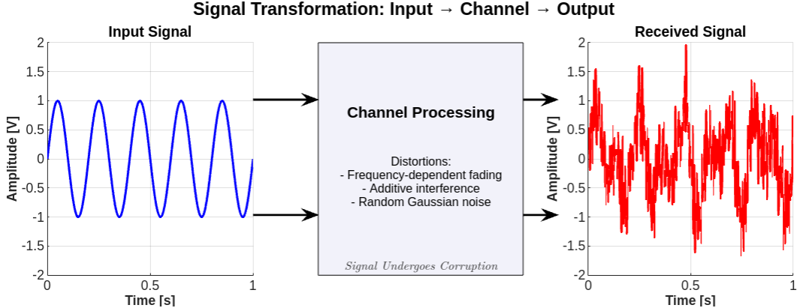

Liquid Neural Networks
September 2025 • Reading Time: 10 Minutes
AI differs from cognitive science in that it prioritizes performance milestones over biological plausibility. One can explore concepts more deeply entwined with the latter, but don't expect high citation counts if you publish on them. However, it is this pool of ideas and concepts that can inform or shift one's own practical perspective.

Signal transformation: Channel effects on a transmitted signal